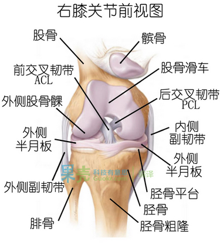
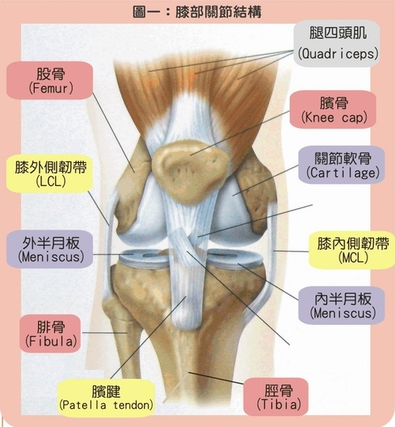

登山膝盖损伤与治疗资料
感谢原作者McKinley Health Center，感谢译者jiang。编辑整理：野味丁
很多山友都会出现膝盖运动损伤现象，少数山野超人例外。特分享一篇文章，赠人玫瑰，手留余香。十几年前爱上长跑，结果有一段时间感觉膝盖非常痛……尤其是上下楼的时候，于是就去看了下门诊，说是运动过量导致膝盖损伤了……然后我就经常关注这方面的文章,现在整理出来供大家参考。
膝盖比我想象的脆弱很多，而且户外、骑车这些运动一不小心就特别容易让自己的膝盖受伤，希望大家好好看一看下面这篇帖子，一定注意保护好膝盖哦！
编者：野味丁
症状
在膑尖处有明显的压疼。触摸时，可感到膑腱附着处有肿胀、钝厚的改变。有些患者可以摸到增生的骨刺尖。作伸膝抗阻试验、半蹲试验时，膑尖处出现疼痛。无论慢性或急性腘肌损伤，主要表现是蹲下或起来时，或在上楼、爬坡时，腘窝部出现疼痛，其性质可以是间断性或持续性的，大部分慢性损伤者表现为钝疼，急性损伤者则是剧烈或较剧烈的撕样疼或牵扯样疼。
检验方法
- 平躺于床上，（如果只有自己就双腿伸直坐在床上，双腿一定要伸直，否则没有感觉），用手的虎口对准膝盖上延，拤住，保证膝盖不能前后移动，然后大腿用力，如果感觉到明显疼痛就是膝盖内软组织损伤了，如果疼痛剧烈，就是软组织老化了。
- 伸膝抗阻试验仰卧位：检查者一手托患膝，让患者做伸膝动作，另一手置于踝关节前侧施以阻挡力。出现膝前疼痛则为阳性。用来检查伸膝装置的劳损和髌股关节的退变，根据髌骨上缘、髌骨尖、髌韧带部以及髌骨后等具体出现疼痛的部位可以进行进一步诊断。伸膝装置的劳损可以在膝关节任何伸屈度进行检查，髌股关节的退变则须在屈膝45-90时进行检查。
形成原因
由于人体骨骼的结构特点，当腿步弯曲时膝盖内的软组织密实接触，润滑液体不能很好的保护膝盖，长时间负重登山，造成膝盖内硬性摩擦，导致软组织老化。登山、骑自行车、爬楼等等，长时间膝盖弯曲的动作都会导致软组织老化。
治疗
- 服用阿司匹林以减轻疼痛和炎症
- 如果X照片反映有半月板撕裂，那需要外科治疗，即关节镜外科处理，那包括插入不锈钢管子，用吸引器吸出撕裂的软骨片。这种流行的新手术方法可让人手术后一周内恢复运动能力
- 理疗之外还可以用中药外敷、按摩
-
恢复措施：
- 双腿伸直平坐于床上，腿部保证平直的情况下，用力抬高，反复一百次。注意！不能双腿同时，要分开进行。
- 此方法的原因及作用：当双腿伸直时大腿骨和小腿骨之间的距离最大，软组织之间就能产生一定的空间。腿伸直用力上抬，实质是肌肉用力，就可以把润滑液压入膝盖软组织之间的空隙，给软组织补充营养，长时间如此可加强软组织的耐磨性能。
预防
加强大腿正面肌肉耐力和力量的锻炼，用处在什么地方？用处不在于让你爬更远的山，而是在于让你就算是在下山的时候也能保持旺盛的体力。很多损伤都是发生在体力不济的时候，当大腿劳累的时候，你走路时便会不自觉的锁关节，锁关节的意思就是把腿部伸的笔直，这样可以减轻大腿肌肉的负担，暂时放松自己的肌肉，但是却很容易造成膝劳损，膝冲击伤，脚踝劳损，脚踝扭伤，以及腰肌劳损。
- 训练前热身活动一定要充分，不要直接上大运动量，损伤的发生最常见于疲劳或精力不足的时候。
- 跑步时注意跑步姿势，不要只用某只脚的一侧着地；
- 注意运用大腿的肌肉群，避免膝盖受到来自脚下的直接冲击。下山过程中为了防止膝关节承受压力增大，应前脚掌先着地，再过渡到全脚掌着地，以缓冲膝关节的压力。登山运动过程中结束后可对膝关节进行局部按摩，使膝关节得到充分的放松，防止其僵硬。
- 出现膝盖不适症状时，适当减小运动量和运动频率，避免进行剧烈的跑、跳和负重运动；
- 平时注意膝部保暖，特别在夏天，不要贪凉；
- 运动后对腿部肌肉热敷或中药按摩。
- 负重拉练时，特别是下坡时，避免膝盖受到冲击；
- 肌肉的发达可在一定情况下缓解膝盖所承受的压力，可以让膝盖的损伤降低到最小。平时多做腿部肌肉锻炼，尽量减少对膝盖的承受力。有意识地加强对股四头肌（大腿前部）和十字韧带的锻炼，增强股四头肌内侧及大腿肌肉力量，结合采用肌肉伸展拉长，步行，马步或贴墙练习等方法，为髌骨在股骨端糟内平稳运动铺好道路
- 登山前要用双手手指揉搓膝盖下边缘，促进润滑夜对膝盖的保护；
- 伸展拉长的腿筋及髌股关节，有利减少膝损伤的机会
损伤发生后的恢复注意事项
有些人往往在膝关节损伤以后，放弃了体育运动，其实得不偿失。运动医学专家研究发现，从长远的效果看，不锻炼的人肌肉萎缩和关节退化的速度更快，锻炼则能有效减缓萎缩和退化速度。进行膝盖耐力锻炼的原则是，要在最大程度减小关节负荷的情况下，加强肌肉和骨质的锻炼。
直腿抬高
直腿抬高是一种简单易行的锻炼方法，平躺在床上，把腿伸起，让大腿上的肌肉收紧、绷直，与床成45度夹角，每次维持1秒钟，再慢慢地放下，如此重复50次。持续练习，对加强膝关节的抗负荷能力很有帮助。
贴墙蹲起
贴墙蹲起是另一种有效保护膝关节的方法，背靠墙而立，脚后跟离墙1只脚的距离，在两膝盖间放置一只球（可以是篮球、足球），夹紧球，身体沿墙壁缓慢下蹲，直到膝盖与小腿成90度直角，默数三秒，再慢慢直起身体。因为背部贴墙，支撑了一部分体重，膝盖受力相对比较少，因此较安全。坚持每星期运动2至3次，每次重复15次。
跳绳
跳绳对膝盖的冲击力量只有跑步的1／7 至1／2，而且只要你能掌握跳绳的技巧，用脚底的前端着地，就能降低对身体的冲击，这样膝部既得到了锻炼又保证了安全。
按摩
坚持按摩或拍打膝部可加速膝部的血液循环，但力度要适当。
平时锻炼，爬山和膝盖受伤的关系
很多zn型强人，身体素质一般,建议他们锻炼，有的女孩子怕腿长粗，要不就推说没有时间，要不就振振有词的说，体力和爬山不是一回事，我跑步不行，你看我爬山不是一样快？其结果是明显的，就是落下一身的关节伤。所以我现在比较注重平时的锻炼，尤其是大腿正面肌肉耐力和力量的锻炼，用处在什么地方？用处不在于让你爬更远的山，而是在于让你就算是在下山的时候也能保持旺盛的体力。很多损伤都是发生在体力不济的时候，我看过很多人爬山，上山的时候一个个生龙活虎，下山的时候却一个个拖着腿下（以前我也是这样子）。当大腿劳累的时候，你走路时便会不自觉的锁关节，锁关节的意思就是把腿部伸的笔直，这样可以减轻大腿肌肉的负担，暂时放松自己的肌肉，但是却很容易造成膝劳损，膝冲击伤，脚踝劳损，脚踝扭伤，以及腰肌劳损。
最重要的是预防：[首先记得平时要补钙]
- 训练前热身活动一定要充分，不要直接上大运动量，损伤的发生最常见于疲劳或精力不足的时候。
- 跑步时注意跑步姿势，不要只用某只脚的一侧着地；
- 注意运用大腿的肌肉群，避免膝盖受到来自脚下的直接冲击；
- 出现膝盖不适症状时，适当减小运动量和运动频率，避免进行剧烈的跑、跳和负重运动；
- 平时注意膝部保暖，特别在夏天，不要贪凉；
- 运动后对腿部肌肉热敷；
- 负重拉练时，特别是下坡时，避免膝盖受到冲击；
- 肌肉的发达可在一定情况下缓解膝盖所承受的压力，可以让膝盖的损伤降低到最小。平时多做腿部肌肉锻炼，尽量减少对膝盖的承受力。有意识地加强对股四头肌（大腿前部）和十字韧带的锻炼，增强股四头肌内侧及大腿肌肉力量（比方说负重深蹲），结合采用肌肉伸展拉长，步行，马步或贴墙练习等方法，为髌骨在股骨端糟内平稳运动铺好道路。这次去玉珠我就觉得比较轻松了。
- 登山前要用双手手指揉搓膝盖下边缘，促进润滑夜对膝盖的保护；
- 伸展拉长的腿筋及髌股关节，有利减少膝损伤的机会；
建议把爬山当回事的人，还是多注重注重脚下，在不去爬山的日子里，多运动锻炼。抛开作为训练的负重拉练，许多强人都体会过那种极端疲惫时的某种快乐。而且还容易上瘾。
就此，俺只有简单的一句——简单的快乐，再增加一点点自我维护，就象一部好的吉普车，别开了几里地就坏了，保养好，可以一直开到天边。犀牛们再出去撒野的时候不必要盲目追求负重量和速度，保养好自已的膝盖，那是继续玩下去的本钱。有两样东东一定不要忘了哈：护膝！登山杖！
山野可给予人的还有太多太多，放开眼界，找到属于自己的乐趣。人生前面的风景还多着呢！负重提踵（踮脚尖）主要是练小腿的比目鱼鱼肌，不是为了练膝盖，膝盖是练不了的。在提踵放下的时候大腿肌肉收紧，对大腿肌肉也是有练的，使大腿肌肉伸展拉长。每个登山训练计划里都有这项的。
量力而行——背超过体重1/4的包下山就要从保护膝盖的角度控制节奏了，超过1/3就要好好考虑怎么减少冲击，考虑使用登山杖。松软的土地、碎石坡、雪地都对膝盖很友好；
其实什么时候上下山，登山杖对保护膝盖都有好处，尤其是负重时和膝盖有问题时；减少锻炼时对膝盖的损耗。正经出去玩时对膝盖损耗有时是没办法，但锻炼时也损耗就太亏了；进行有助于保护膝盖的锻炼，有的是培养肌肉力量和对称，有的是某些伸展运动。
登山徒步别忘保护膝盖
你是否有过这样的经历：一次山间暴走之后，觉得自己的膝盖像被锈住了，曲伸困难，好几天都不自在，或是膝部非常酸疼，每次迈步时都得咬牙？也可能过几天这些症状会有所缓解，于是你就想，只是太劳累了吧，是不是已经恢复了？但其实，这时你该小心了，你的膝关节很可能已经受到了损伤。
强健你的膝关节，轻松上路
许多运动都会引起膝部的磨损，徒步虽然不像篮球或滑雪那样危险，但对膝部的损伤却很常见，比如走在布满鹅卵石的路面上，一不留神就会跌倒，而且经常徒步，对膝部的磨损也会慢慢累积、加重。
随着越来越多的人走出户外，膝部损伤在徒步旅行者中越来越常见。这类损伤有潜在的致跛危险，它不是一朝一夕就可痊愈的，可能会导致骨关节炎，甚至需要进行全膝置换。
不过，令人欣慰的是，膝部损伤几乎都是由于个人的失误造成的，也就是说，它几乎可以完全避免，下面的文字会帮助你了解自己的膝关节、明确该如何保护它。
认识你的膝关节
专家会告诉你膝关节喜欢运动，但他们也会警告你负重行走，尤其是下山，却不太符合这个弯曲关节的口味。平均而言，一个人每年大概要走200万步，这个统计不包括那些野外徒步旅行。但膝部损伤并不仅仅是步行数量的问题。在地板上行走时，你的脚后跟承受的压力是你自身重量的三倍；在平坦的路面上慢跑时，这个压力大约是你自身重量的五倍。而徒步下山类似跑步，如果你还背一个大背包，那这个压力还要包括五倍的背包重量。
 
膝部有它自己的减震器：半月板，这是两片半月型的软骨，位于股骨和胫骨相交处，它的作用就如软垫，用来分散重量。此外，还有关节软骨，它们就像平滑的弹力内衬，覆盖在膝部会合的骨顶端，使骨端相对运动时的摩擦减到最小。不过，这两类软骨只能消减一定量的撞击力，当背着一个重重的背包远足时，尤其是下山行走，容易使膝关节发生退行性病变。一辆汽车的减震器老化，你还可以换一个新的，但对于膝关节，你却没有选择。
膝关节构造复杂，它不像肩胛窝，也不像结构如吸盘似的髋关节，膝关节没有那么深的关节窝，它更像门上的合叶，一个机关巧妙的合叶，容纳着一侧稍长一侧稍短的股骨头，四条主要韧带（其中几条是交叉韧带）将关节束扎在一起，膝盖的每一次屈伸，都会牵引这些韧带。这样一个不怎么强韧的关节，在运动加速时要充当腿部的杠杆，在减速时又被当作“车闸”。事实上，任何快速的转向都涉及腿中部的扭转，这对膝部而言，可能就会导致疼痛，或者更糟。
在野外徒步时，还会遇到一些猝不及防的问题。我们脚下的路面往往凹凸不平，到处是四散的枯枝落叶，有时雨水还会令路面湿滑无比。如果不小心绊倒、滑倒或跌倒，都可能拉伤或撕裂你的某一条韧带。
膝关节扭伤时，首先受损伤的通常是内侧副韧带（MCL），它起于大腿骨，止于膝内侧的胫骨。如果扭伤很严重，当内侧副韧带撕裂时，会听到啪的一声。一会过后，疼痛会转为一种钝疼，你可能可以走路，至少可以直直地向前走。内侧副韧带撕裂通常不需要手术，休息、抗炎药物治疗以及冰敷都有助于康复；加固锻炼则有助于防止韧带再次撕裂。如果扭伤极其严重，则可能撕裂前交叉韧带（ACL），那么疼痛症状就会很严重了，而且还会导致膝关节的不稳定，你很可能以后要接受手术治疗。
千里之行 始于足下
不过不要太紧张，这些损伤其实都是可以预防和避免的，出行前，就让我们从下向上地来准备一下吧。
首先，研究一下你的双脚是如何与路面接触的。看看你的鞋，是不是内侧磨损比较严重？如果是这样，表明你行走时足内侧用力过度，在足跟抬起到足趾着地这一过程中，脚部过度向内翻，如此一来，相应的胫骨上的扭曲会牵引膝盖骨偏离中心，这就有可能导致前膝部疼痛。最简单的矫正办法是穿一双结实的靴子，它能支持踝部，便于控制姿势。有足弓支持的鞋垫也能起到同样的作用。
其次，如果你需要长途跋涉，不妨准备一对护膝。最常见的护膝是一个有弹性的套筒，穿着时，会将整个膝盖包裹起来，它对膝关节及周围肌肉组织能起到轻度加压、支撑的作用，可以预防长距离行走后的膝盖肿胀。如果在徒步中膝盖轻度扭伤，立刻带上护膝可以保护、支撑受伤的膝盖。此外，护膝还有蓄热保暖的作用，适合在寒冷地区徒步时使用。有的护膝在膝盖处有个开口，露出膝盖，目的是在支撑膝部之余，又不会令膝盖受太大的压力，引起其他膝盖问题。选择护膝，不宜太紧，以穿着舒适为准。
第三，你的手里也别闲着，持一副轻便的手杖，可以大大降低徒步过程中对膝关节的磨损。这是因为一方面，手杖的支撑可以增强行走的稳定性，保持平衡，防止跌倒、磕绊，较少膝部受伤的几率；另一方面，有了两支手杖的配合，可以降低运动的强度，减轻膝关节的压力，从而减少对膝关节的磨损。
第四，如果你的徒步中要长时间攀登，比如上台阶，应该时不时停下来休息一下，因为持续长时间的攀登对膝关节的磨损最厉害。登二十分钟，停三分钟，可以缓解膝部的紧张。
第五，尽量选择平整的路面行走也是非常重要的。崎岖的、多石的路面，会让膝盖扭转频率加剧，对关节的磨损也就更大。
最后一点，要增强自己的膝盖保健意识。严重的损伤多源于徒步时的疏忽，或者没有充分的准备就踏上了崎岖的道路。增强保健意识，出行前做好充分的准备，如果膝部受了伤，千万不能掉以轻心，哪怕是轻伤，不要等轻微的疼转为钻心的痛时才止住脚步。
锻炼从今天开始
平时的锻炼也可以帮助我们强健腿部肌肉，增强膝部的韧性，让你在徒步时步履轻松。
髂胫带伸展运动
侧身站在离桌子2或3英尺的地方，两腿交叉，外侧腿在前，内侧腿在后。单手扶桌案，身体向桌边倾斜，感觉外侧臀部下降，内侧腿的外侧髂胫带被拉伸。这个动作可以作为徒步或其他运动前、中间休息、运动后的伸展恢复体叉。
股内侧斜肌（VMO）伸展运动
这个动作是为了专门锻炼四头肌中那块泪滴形的肌肉——股内侧斜肌（VMO）。这块肌肉对膝部的稳定起着至关重要的作用。
单纯的徒步不足以有效地锻炼股内侧斜肌的力量，所以，我们需要专门的股内侧斜肌锻炼，尤其是女性，因为通常她们的四头肌不如男性的强健。研究者们认为，女性徒步者中前交叉韧带撕裂的机率比男性高8倍，这种相对的孱弱是一个很重要的原因。大多数健身机械都可以辅助这项锻炼。
先用双腿抬升，选择合适的重量，然后再开始用单腿交替抬升。注意，必须是单腿交替，如果用的是两条腿，那么得到锻炼是四头肌的另外一个部位。刚开始不适宜重量太大，等你适应之后，再慢慢加大重量。
后弓步运动
自然站立，双脚分开，与臀部同宽。右脚向后迈出，脚跟不要着地。双腿向下弯曲，直至左腿大腿与地面平行，右腿大腿与地面垂直。保持姿势片刻。臀肌发力，收右腿，回到初始状态。然后换左腿重复动作。注意，收腿时尽量保持身体稳定。开始时，这个动作每次重复10次，待力量增强后，逐渐增加重复次数。
相关资料
本人查了不少资料，平时比较注重这方面的保养。懂得一些专业知识，现在把我觉得比较正确、讲得比较易懂的东西贴上来供大家参考：
髌骨软化症易发生于年龄较轻的成人，但中老年人发病者也很多.该病以膝关节疼痛为主，影响病人的生活和工作.近年来该病已引起医学界的重视，正在进行广泛地研究。
发病机制
髌骨位于膝关节前方，是膝关节的重要组成部分.髌骨是股4头肌腱的子骨，借股4头肌腱及髌韧带固定于膝前方，与股骨髁形成髌骨关节。髌骨的后面被关节软骨覆盖。
髌骨对膝关节的功能有重要作用。它作为杠杆支点，使膝关节在伸、屈过程中灵活、有力。同时，髌骨在伸膝与屈膝过程中也承受着巨大的压力，所以，关节软骨面容易损伤。
有膝关节畸形的人，如高位髌骨、低位髌骨、膝内翻和膝外翻等易患此病。但多数病人无关节畸形，他们的发病与膝部慢性损伤有关。膝部猛烈运动，如自行车运动员容易损伤髌骨的软骨面。中老年人发病常与髌骨持续受压有关，如长期蹲位劳动，髌骨承受的压力最大。长期石膏固定也容易压迫髌骨。临床观察发现，骨折后行下肢牵引治疗时也可诱发髌骨软化。
关节软骨是没有血运的组织，其营养靠关节活动的挤压作用使滑液中的营养成分渗透软骨中去.长期蹲位工作时髌骨承受持续巨大压力，关节软骨即可受到机械性损伤，也可影响软骨的营养。长期石膏固定和牵引时关节不能活动，限制滑液成分向软骨内渗透，最后导致髌骨软化。
中老年人髌骨软化的发生除了上述损伤因素外，由于老龄化，关节软骨本身的成分改变是髌骨软化症发生的内在因素。
关节软骨损伤后逐渐碎裂、脱落或被腐蚀、溶解.软骨下骨质暴露，软骨边缘形成骨刺.此时，光滑的关节软骨面变得粗糙不平，关节活动时出现摩擦.由于关节软骨破坏、关节面不光滑，关节的损伤会进一步加快。
临床表现
发病缓慢.起初膝部不适，疼痛定位不清.以后髌骨后疼痛明显，活动时及活动后疼痛加重，尤其是上楼梯时疼痛更重.病情严重时膝关节活动有摩擦感.查体时挤压髌骨能诱发疼痛，并有摩擦音。髌骨挤压试验时髌骨后有剧痛，表明髌股关节软骨损伤，有诊断意义.X线检查，早期可无异发现.随着病情发展可见髌股关节间隙变窄，软骨下骨硬化，髌骨边缘骨质增生。
治疗
治疗强调早期进行，在软骨损伤早期进行治疗有可能控制病情发展，取得良好疗效，关节软骨一旦破坏，关节面不光滑，病情会快速发展，不但治疗困难，而且也很难取得良好疗效。
保守治疗
关节软骨退变早期，关节面尚完整、光滑时积极进行正规治疗，常能取得满意效果，保守治疗适应于关节不适或疼痛早期、关节间隙无明显改变的病人，这时最重要的一点就是限制膝关节的活动，减少对髌股关节面的压力，从而阻断了造成软骨损伤机械性因素的作用，有利于损伤组织的愈合。
具体方法是:尽量减少下蹲动作，避免长蹲位工作，蹲位时髌骨承受的压力最大，上楼梯及骑自行车时髌骨承受的压力也很大，应引起注意。同时，要注意动、静结合，关节完全休息股4头肌会出现废用性萎缩，不利于关节软骨的营养。合理的方法是:在床上主动、缓慢伸、屈膝关节，既能保持关节面的润滑和营养，增强股4头肌肌力，也能减少髌股关节面的压力。
- 可行必要的药物治疗，口服消炎止痛药，如布洛芬、消炎痛等，能够控制症状。
- 理疗能够缓解疼痛，其中，离子导入疗效较好。
- 关节内注射透明质酸，能增加关节面的润滑作用，这是近年来出现的一种新方法。
- 不主张关节内注射激素，因激素本身可损伤关节软骨。
手术治疗
病情严重，经保守治疗无效的病人可考虑手术治疗。手术是一种创伤性治疗方法.因此，尽量采取保守治疗，但保守治疗无效的病人手术治疗有一定意义，近几年手术方法有了较大改进和发展，但远未达到理想的程度。所以，中老年人选用手术治疗时应慎重考虑。
对于病变较局限的病人手术将病变软骨削除，一直到软骨下骨质，通过软骨下肉芽自生有可能将病变修复，这种方法损伤较小。
软骨破坏范围大的病人可将病变软骨切除，用自体骨膜或筋膜覆盖，可望再生形成新的软骨面，目前这一手术已用于临床，髌骨及股骨关节面均有严重破坏，可行人工髌骨置换或切除髌骨。
预防
髌骨软化症的发生对中老年人来说有其内在因素和外在因素。内在因素就是关节软骨本身的退变，这与年龄等因素有关，外在因素就是机械性因素对关节软骨的慢性损伤，预防髌骨软化症的发生主要要从减少对髌股关节的持续压力，改善软骨的营养。可参考如下措施；
主动充分活动关节
要在不负重条件下进行，如平卧在床上主动伸、屈膝关节。坚持每天早、晚各一次，每次10分钟。
充分活动关节可使髌骨关节面各个部分都受到刺激，滑液营养成分能均匀渗透到软骨组织中去，并能增强关节的润滑作用。
防止髌骨关节面持续受压
屈膝位髌骨所受压力较大，容易损伤关节面，避免持续性蹲位对髌骨关节面的压力。
行股4头肌锻炼
石膏固定或下肢牵引治疗时，要主动行股4头肌锻炼，股4头肌舒缩时能带动髌骨上下移动，有利于软骨的营养渗透及减轻髌股关节面的持续受压。
及时休息及治疗
膝关节出现不适或不定位疼痛时，要考虑到早期髌骨软化症的可能，要及时休息、及时治疗，防止关节软骨退变加重。
ps：预防里的前三条很有效，大家没事可以做做
最后说几句心里话：户外在生命中虽然不可缺少，但什么都没有健康重要，所以奉劝大家在路上身体出现问题时，切记要引起重视！！
登山時的走路技巧大全
下面提供登山徒步走路大全供驴友们参照,希望能帮助到大家。
走路需要技巧吗？当你负着大背包在陡坡上气喘如牛的时候，就能体会「走路技巧」的必要性。那么，走路技巧到底是什么？
试着回想一下，当你手上提着行李袋，或者拿着重物的时候，是不是很自然地就会将手打直，把承担重物的责任转到手臂的骨架上，而不将所有重量都由手臂的肌肉来承担呢？这是你的直觉反应吗？还是你手臂的肌肉不够强壮？是重物把手臂拉直的呢？抑或是你的身体已经自然而然地选择了比较轻松的方式？这些说法都对，但这和在山径上的行走又有什么关联呢？这两者的关联在于，两者都共用了同一个技巧，就是运用身体的骨架来支撑重量，而不是用容易疲劳的小肌肉来支撑重量，而这正是下列许多走路技巧的共通原则。
休息步
这大概是效果最直接，也最容易学的一个技巧了。技巧在于，在跨出下一步之前，记得把现在支撑重量的那只脚打直，脚打直的目的在于将身体的重量交给整只脚的腿骨，让你的大、小腿（尤其是小腿）肌肉休息十分之一秒，就算只有百分之一秒的休息，乍看微不足道，却是使肌肉能够长久持续的宝贵休息时间。记得：在踏出每一步之前，确定你已经把脚打直。
调整呼吸(节奏)
呼吸也是走路技巧？是的，而且是极为重要的一环。当你走得轻松、愉快时，这是一个无用的技巧，但是当坡度变陡，开始觉得喘不过气的时候，这个技巧却肯定会帮你找回节奏，让你走得轻松一些。呼吸时通常是二步一呼吸，也就是一步一呼，一步一吸，如果这样还是喘不过气，可以试着一步一呼吸，甚至是一步二呼吸。这个方法的重点在于让呼吸的节奏配合上脚步的节奏，一旦找出自己的节奏，会越走越顺畅、越走越舒服，也越轻松。
全脚掌着地
相较于用脚尖，或者用半脚掌着地，全脚掌着地不但有更高的稳定性，更重要的是，相较于前者使用小腿肌肉支撑重量，全脚掌的行进使用更多的大肌肉来支撑重量，较不易疲劳，能从事较长时间的运动而不需要休息。这也是为什么登山鞋的鞋底必须选用较坚硬的材质，不仅利于全脚掌的行进，也减少脚踝所承受的冲击。
鸭子步
这是雪地步法的第一课，将脚掌微张，随着坡度增加，脚掌张开的幅度也增加，这样的走路方式想像起来似乎颇为滑稽，但实际上这是一个十分简单，却有着神奇效果的方法，不但在上坡时能缩短脚打直的时间，且能令膝盖所承受压力减轻，尤其是下坡时，一定更能切身感受到膝盖的受力明显减少，因为压力已经被脚骨和腿部肌肉吸收掉大半了。如果你在下山时，觉得膝盖隐隐作痛，这会是一个相当受用的技巧，膝盖会痛的人尤能真切感受它的重要。
小步走
这也算是技巧吗？是的，而且这常常是登山时会不会累垮的关键因素，也常常是生手与老手的区别所在，除非不得已，你是不会看到登山老手把脚抬到高于膝盖，或是跨大步走上坡路。脚若抬高或是跨远，会把大部分的力量加在大腿肌肉上，并延长肌肉处于运动状态的时间，这是很累人的，而这个技巧的用意在于缩短肌肉在每一步的运动时间，使肌肉的休息更频繁、更充裕。
接下来的四个技巧，并不能算是走路技巧，但肯定能让你走得更轻松。
善用登山杖
登山杖的使用，目的在于将脚的运动量由手及上半身来分担，以减轻下半身肌肉的负担，让你的步伐更接近不背东西的走路姿势，也会比不用登山杖时走得轻松一些。行进于下坡路段时，你一定更能感受到登山杖对于下坡冲击力的吸收效果，以及对膝盖的保护作用。
有些健行者觉得登山杖用来不顺手而放弃，其实，只要经过练习，慢慢就会上手，一旦能体会手脚并用所带来的舒适之后，许多人都从此离不开登山杖。
背轻一些
当你行进时，是背负十五公斤时走得轻松，还是背负二十公斤时走得轻松，答案应当是很明显的。或许会有人认为，背得重是一件很英雄的事，或是背得轻有些丢脸。这是观念问题，背得轻并不代表背不了重，而是把将节省下来的体力用来应付突发状况。 “Light is right.”－轻量化在欧美已是一个广为登山者所接受的观念。重要的是，背十五公斤的健行者并不比背二十公斤的健行者少带了什么东西，而是他的装备每一样都比较轻，所节省下来的重量就会反应在总重量上，也会反映在行进的速度、消耗的卡路里（热量）与紧急应变的能力上。
暖身操
这是常被山友们忽略的一环，也有人认为并不需要作暖身操。我的建议是，这是个非常必要的动作，因为肌肉经过了一夜的休息，而出发前的暖身操正好能唤回肌肉的记忆，肌肉才知道要开始一天的工作，也才能作最有效率的使用，如此不仅走起路来较轻松，肌肉也较不易受伤。
慢就是快、快就是慢
这个技巧最难学会，即使是登山高手也常忽略这个原则。在步道上一开始走得很快的人，通常在一小段路之后就会明显变慢，而登山老手在一开始则会慢慢走，与车子暖车的道理一样。在慢慢加快速度并找到最舒适的行进节奏之后，维持这个舒服的速度就能走得久、走得舒服也最节省体能。这个舒服的速度就是流汗最少的行进速度。